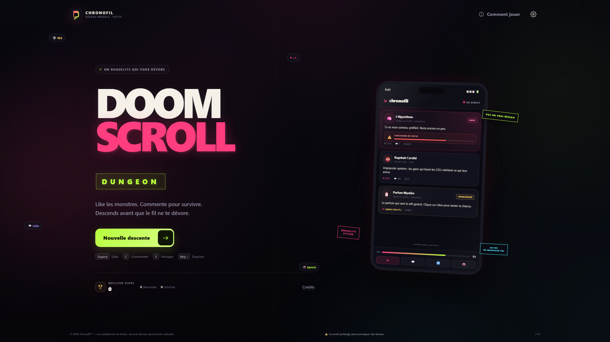

CASIFOX
GAME HUB
Cinq jeux indépendants, testés sur leur URL publique, notés après audit. Pas de fausse popularité, pas de statistique inventée : des liens directs et des fiches qui disent ce qui marche et ce qui reste à améliorer.
5 jeux · notes réelles /100 · liens directs vers les jeux en ligne

Le jeu en tête du classement
Les cinq jeux
Chaque carte mène au jeu en ligne et à sa fiche détaillée. Les notes proviennent de l'audit du 12 novembre 2026.
Aucun jeu ne correspond à cette recherche.
Effacez le filtre ou choisissez un autre genre.
Notes après audit
Sur 100, avec le détail par critère dans chaque fiche. Les notes « avant » et « après » corrections sont dans les fiches.
Nouveautés
Dates issues de l'historique Git et du rapport de publication. Aucune date inventée.
-
Trois jeux mis en ligneAVANT LE SILENCE, Quand les notes s'effacent et The Lying Game sont publiés sur GitHub Pages et testés sur leur URL publique.
-
Corrections d'auditSécurité de l'import de sauvegarde (Neon Jackpot), copie de secours (AVANT LE SILENCE), minuteur et sauvegarde (The Lying Game), graine assainie (Doomscroll Dungeon).
-
Neon Jackpot v1.5.1Auto-achat global, croupier, défis de couche 4 et manches en arrière-plan.
Cinq jeux, zéro faux chiffre
CASIFOX GAME HUB réunit cinq projets indépendants : un roguelite satirique, un casino incrémental virtuel, une aventure puzzle qui ment, un roman musical et un parcours documentaire sur la Maison d'Izieu.
Chaque jeu garde son propre dépôt et sa propre URL. Le hub ne les héberge pas et ne déplace rien : il documente ce qui a été audité, testé et corrigé, avec les rapports accessibles.
Les notes sont des jugements argumentés à partir de tests réels. Elles ne mesurent ni la popularité ni le nombre de joueurs, qui ne sont pas suivis.
« Pas de fausse popularité, pas de statistique inventée. Des liens directs et des fiches qui disent ce qui marche et ce qui reste à améliorer. »